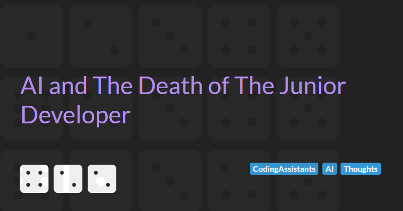

AI and The Death of The Junior Developer
Over the past year, the number of AI-powered development tools has exploded. This rapid proliferation has been matched, if not exceeded, by the hype surrounding their capabilities, with bold claims of revolutionising how software is written.
From flashy demos of autonomous agents shipping pull requests to claims of 10x productivity gains, it’s easy to get swept up in the narrative that software engineering is being reinvented. If the claims of these tools are to be believed then the software industry could be on the precipice of a deep and fundamental shift. One that could redraw the lines of how software is written, who writes it, and what skills are still considered essential.
As the dust begins to settle, three distinct patterns have emerged in how AI is being applied to coding: AI coding assistants, Vibe coding tools, and Autonomous coding agents. Each pushes a little further into territory that was traditionally the domain of junior developers and, for me, this raises important questions about what happens to those early-career roles in an AI-first future.
In the last 12 months, the rise of AI coding assistants have sparked a mixture of awe and unease across the software industry. Tools like GitHub Copilot, Amazon Q Developer, Cursor, Windsurf, and many others claim to be an AI pair programmer that is capable of generating complete functions, refactoring code, and writing tests.
My own personal experience of using these tools is, perhaps, more sobering. My articles on How Useful Are Coding Assistants In 2025? , Evaluating Agents By Building Games, and Vibe Coding: The Emperor's New Clothes highlight some of the current limitations.
More recently a new wave of tools autonomous coding agents aim to go further. Tools like Devin, GitHub Copilot's new agent, and a growing number of AI engineer platforms promise to take a specification or GitHub issue and deliver a working solution with minimal human involvement. These agents can make multi-file changes, resolve dependencies, generate tests, and even open pull requests. These agents claim to be able to act more like junior developers than simple assistants.
The demos seem impressive, the productivity promises are seductive, and the hype machine is in full swing.
But I have a deeper concern that lurking beneath the surface of this potential technological gold rush is an existential question:
What is the implication of autonomous coding agents for the future of software engineering?
The Risks to Junior Devs in the Age of AI
If the promise of autonomous coding agents lives up to the hype, their value proposition is clear and compelling: automate repetitive, low-value tasks and accelerate software delivery.
For junior developers, however, this is where the threat begins. Much of what early-career engineers do is the simpler work of minor bug fixes, implementing small features, or performing routine maintenance to keep the codebase clean and healthy. These are precisely the kinds of tasks that autonomous agents are designed to handle efficiently, putting the traditional role of junior developers at risk.
So, what happens to junior developers if AI can effectively take over their core responsibilities? Organisations may begin to question the value of hiring and investing in junior talent for roles that AI can perform faster and cheaper. This raises an important question:
Will companies continue to recruit and train junior developers, or will they rely more heavily on AI to reduce costs?
The Apprenticeship Collapse
Software engineering has always operated on an informal apprenticeship model. Junior developers cut their teeth on simpler tasks, receive feedback through code reviews, and gradually take on more complex challenges. Through this hands-on learning, they develop critical intuition around trade-offs, debugging, architecture, and edge cases. I firmly believe that skills like these cannot be gained from textbooks or automated tools alone. Hands-on experience is essential.
This progression is how juniors evolve into confident, capable senior engineers who can lead projects, design robust systems, and mentor the next generation. The apprenticeship model ensures a continuous pipeline of talent, knowledge transfer, and innovation within software teams.
However, the rise of autonomous coding agents threatens this traditional growth path. If junior developers are replaced or marginalised because AI can handle their routine tasks, organisations may reduce or stop investing in junior recruitment and training. Without this essential learning stage, the development of future senior talent stalls.
In short: No juniors today means no seniors tomorrow.
The Senior Bottleneck
Even if we accept a future where AI handles the bulk of junior work, someone still needs to define the problem, evaluate the solution, and shepherd it into production.
AI agents today are not truly autonomous, they are assistive. Their output requires validation and it is considered best practice (even by the vendors of these agentic AI tools) that senior developers rigorously review AI-generated code.
This is necessary to catch subtle errors, security risks, and misaligned logic caused by AI’s limited contextual understanding. As a result, senior developers’ roles shift into vigilant gatekeepers who ensure the safe integration of automated outputs while maintaining quality, security, and maintainability standards.
That means senior engineers are not becoming less necessary; they are becoming more central to the process. But if we don't invest in training the next generation, the pool of senior talent will dry up. Organisations may find themselves with brilliant tools but no one with the judgment to use them wisely.
The irony is that while AI might be able to produce code, it can’t produce developers. Only humans can mentor, scaffold growth, and instil the values of quality and craftsmanship. And those humans were once juniors themselves.
Possible Futures
Where we go from here depends on how intentionally the industry responds. Broadly, I believe we face three possible futures:
1. The Efficiency Trap
Organisations chase short-term gains by replacing junior developers with autonomous agents. Costs go down, delivery speeds up (at least temporarily). But over time, the talent pipeline dries up. The senior bottleneck worsens, quality suffers, and innovation slows as teams are left with fewer developers capable of critical thinking, architecture, or mentoring. This is the future we risk sleepwalking into.
2. The Pragmatic Recalibration
In this scenario, the industry realises that much of the hype around autonomous coding agents has been overblown. The tools prove useful, but fall short of replacing developers. Instead, organisations shift toward pragmatic, well-scoped applications of AI such as pair programming, test generation, or code refactoring. Junior developers continue to be hired, trained, and mentored, with AI enhancing rather than displacing their roles. The apprenticeship model survives, bolstered by realistic expectations and thoughtful integration of AI into the developer workflow.
3. The Tooling Breakthrough
It’s possible that agentic tools become vastly more capable, context-aware, and reliable. Through advances in reasoning, codebase understanding, and real-time feedback loops, future agents could play a meaningful role in mentorship itself by guiding junior developers through tasks, offering real-time corrections, and simulating the feedback of a senior reviewer. If these tools reach that level of maturity, the traditional apprenticeship model might be reimagined rather than lost. But even this future will require careful stewardship to ensure it enhances, and doe not replaces, the development of human judgment and experience.
The tools we choose to adopt, and how we choose to adopt them, will shape the next generation of software development.
Conclusion
The future of software development is not solely about faster delivery or lower costs. It is also about preserving the foundations that have long enabled the growth of capable, resilient engineering teams. While AI may be able to accelerate some workflows and automate some simpler tasks, it cannot replace the experience, mentorship, and deep contextual understanding that come from real human learning. If we fail to invest in junior developers today, we jeopardise the talent and leadership of tomorrow. The industry must balance innovation with intention, ensuring that the adoption of AI strengthens rather than erodes the ecosystem of growth that has sustained software engineering for decades.
Eliminating junior roles and replacing them with autonomous coding agents might seem like a tactical win, but it’s a strategic failure. Without space for learning and growth, we risk losing not just junior developers but the very foundation of software engineering. No training today means no expertise tomorrow.
From my experience using these tools, the hype cycle is clearly at the Peak of Inflated Expectations. I hope that by the time we get to the Plateau of Productivity that pragmatism wins the day and we use these tools to enhance human potential, not undermine the development of it.